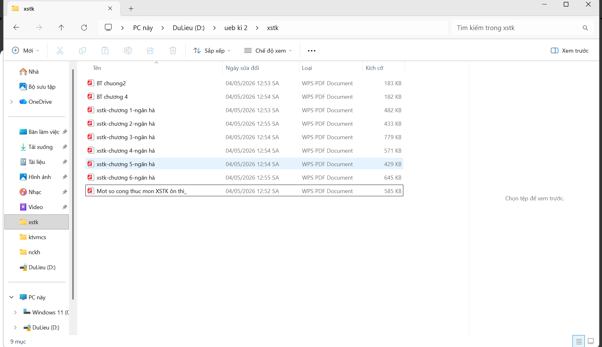
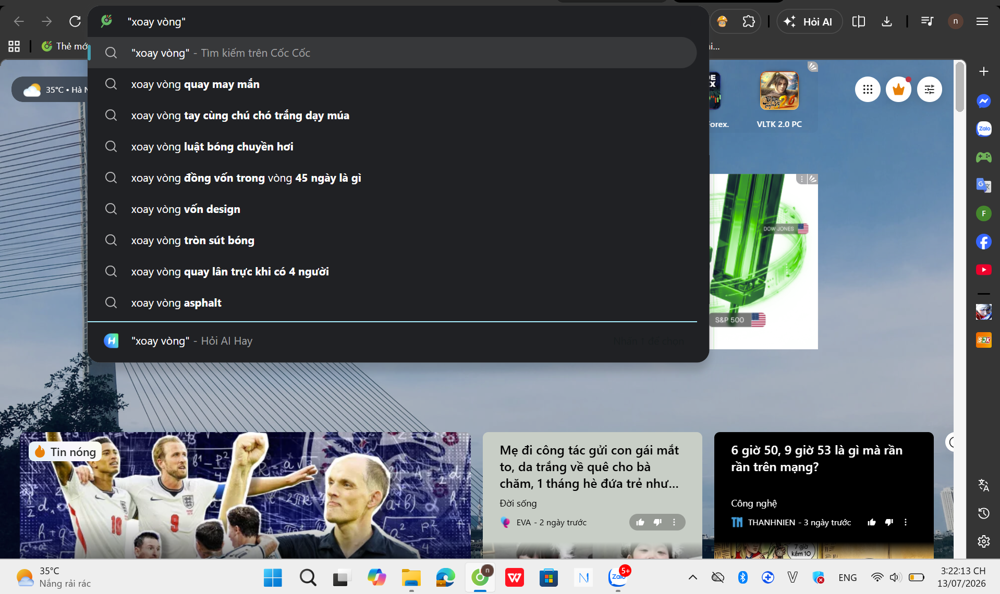
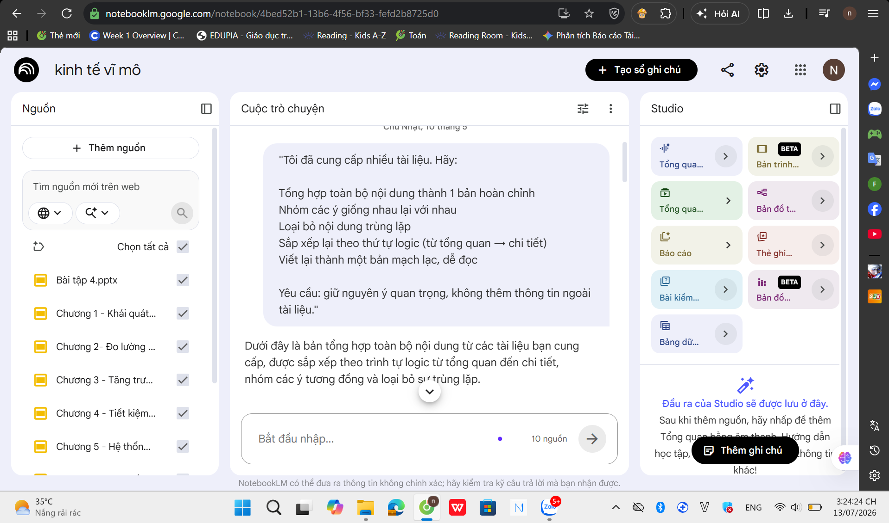
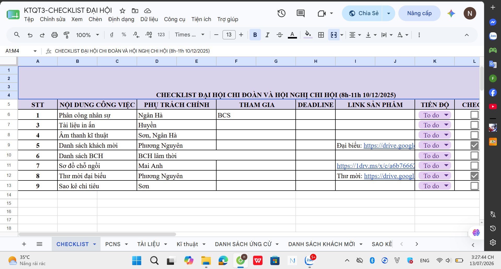
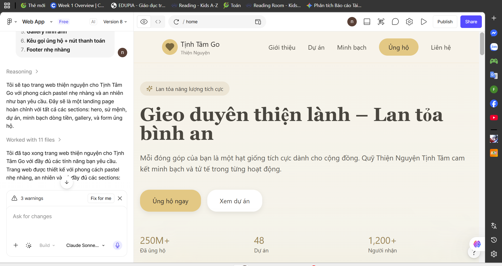

Họ và tên: Vũ Ngân Hà
Mã số sinh viên (MSSV): 25050897
Ngành học: Kinh tế và Kinh doanh Quốc tế - Trường Đại học Kinh tế, ĐHQGHN (UEB - VNU)
Là một sinh viên khối ngành kinh tế trong thời đại số, mục tiêu hàng đầu của tôi là làm chủ và linh hoạt áp dụng các công nghệ hiện đại (như Trí tuệ nhân tạo, công cụ phân tích - lưu trữ dữ liệu đám mây) vào chuyên môn. Tôi định hướng sử dụng những kỹ năng số này nhằm tối ưu hóa quy trình nghiên cứu thị trường, phân tích dữ liệu kinh tế và giải quyết các bài toán thực tiễn trong lĩnh vực Kinh doanh Quốc tế.
Portfolio này không chỉ để "thể hiện các kỹ năng số đã học" hay "lưu trữ sản phẩm cá nhân", mà còn là minh chứng rõ nét cho tư duy chuyển đổi số của tôi trong việc hệ thống hóa kiến thức và ứng dụng công nghệ để nâng cao hiệu suất học tập, làm việc.
Dưới đây là chi tiết quá trình ứng dụng kỹ năng số vào 6 bài tập cốt lõi của môn học, kèm theo minh chứng cụ thể.
Mục tiêu: Tối ưu hóa việc lưu trữ, truy xuất dữ liệu môn học.
Tóm tắt quá trình: Tôi đã thiết lập cấu trúc thư mục dạng cây phân cấp logic: Học kỳ > Môn học > Bài tập/Tài liệu. Đồng thời, tôi áp dụng quy tắc đặt tên tệp thống nhất chặt chẽ để tránh thất lạc tài liệu: [MãMôn]_[TênBàiTập]_[MSSV]_[HọTên]_[PhiênBản] (Ví dụ: INE3104_BaoCaoThiTruong_25050897_VuNganHa_v1.pdf). Điều này giúp việc tìm kiếm dữ liệu diễn ra chỉ trong vài giây.
Minh chứng:

Mục tiêu: Lọc nhiễu thông tin, tìm kiếm nguồn tài liệu kinh tế uy tín.
Tóm tắt quá trình: Để nghiên cứu về tác động của FDI, tôi đã sử dụng các toán tử tìm kiếm nâng cao trên Google Scholar nhằm thu hẹp phạm vi kết quả. Cú pháp tôi sử dụng: "Foreign Direct Investment" OR "FDI" AND "Vietnam" filetype:pdf site:edu.vn. Sau đó, tôi lập bảng lọc thông tin dựa trên tiêu chí CRAAP (Currency, Relevance, Authority, Accuracy, Purpose) để chọn ra các bài báo uy tín.
Minh chứng:

Mục tiêu: Giao tiếp hiệu quả với Trí tuệ nhân tạo để tối ưu đầu ra.
Tóm tắt quá trình: Tôi đã so sánh sự khác biệt khi dùng prompt cơ bản và prompt cải tiến (áp dụng kỹ thuật gắn bối cảnh và phân vai) trên công cụ AI.
Minh chứng:

Mục tiêu: Quản lý tiến độ và làm việc nhóm xuyên không gian.
Tóm tắt quá trình: Nhóm chúng tôi tận dụng hệ sinh thái Google Workspace: Dùng Google Drive để lưu trữ chung; Google Docs để soạn thảo báo cáo real-time; và Google Sheets để lập bảng phân công nhiệm vụ, theo dõi tiến độ (deadline) minh bạch.
Minh chứng:

Mục tiêu: Trực quan hóa dữ liệu và hoàn thiện sản phẩm trình bày.
Tóm tắt quá trình: Tôi sử dụng AI Gemini hỗ trợ xây dựng Slide thuyết trình chuyên nghiệp. Thay vì để AI làm thay toàn bộ, tôi dùng Gemini yêu cầu lên kịch bản (outline), đúc kết dữ liệu kinh tế dài dòng thành các bullet point ngắn gọn. Sau đó kết hợp với công cụ thiết kế tạo ra sản phẩm cuối cùng.
Minh chứng:

Mục tiêu: Đảm bảo liêm chính học thuật trong thời đại Trí tuệ nhân tạo.
Tóm tắt quá trình: Tôi đã tự xây dựng Bộ 3 nguyên tắc sử dụng AI cá nhân:
Quá trình xây dựng Portfolio này mang lại cái nhìn tổng quan về cách công nghệ tác động đến học tập. Khó khăn lớn nhất là việc thay đổi tư duy: từ "tìm kiếm thụ động" sang "giao tiếp chủ động" (Prompting) với AI. Để vượt qua, tôi đã nghiên cứu các cấu trúc viết prompt chuẩn và liên tục thử nghiệm. Việc tự tay đẩy code web lên GitHub Pages cũng là một thách thức thú vị.
Kỹ năng giá trị nhất tôi thu nạp được là Kỹ năng Viết Prompt (Prompt Engineering) và khả năng tổ chức không gian làm việc số. Điều này giúp tôi tăng tốc đáng kể quá trình phân tích dữ liệu chuyên ngành Kinh tế.
Tôi đặc biệt tâm đắc với việc sử dụng Gemini. Gemini sở hữu tốc độ phản hồi nhanh, tư duy logic tốt và hiểu tiếng Việt sâu sắc. Nó giống như một "đối tác tư duy" giúp tôi khai mở nhiều góc nhìn mới mẻ trong việc phân tích kinh tế quốc tế.